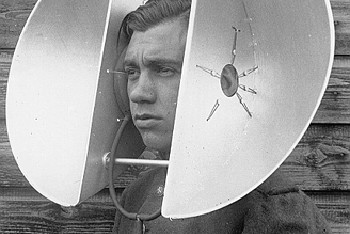

Wir treffen uns am 12. November um kurz vor neun (8 Uhr 55), wer noch auf der Suche nach Team und Idee
ist kommt früher (um 8 Uhr 30). Um neun werden dann die Ideen präsentiert. Sollen wir pitchen?
Anschließend beginnen wir mit dem “bauen”. Um sechs (18 Uhr) ist dann Schluß und die
Meisterwerke werden dann präsentiert.
Die Location ist die Hintere Achmühlerstraße 1 in 6850 Dornbirn. Dort im 4. Stock in den Räumlichkeiten von Lovely Systems und Crate sowie im Vorraum.
Mitbringen sollte man blendende Laune, einen frisch geduschten Körper, Laptop und Kopfhörer.
Setup Night
Am 10. November findet die traditionelle Setup Night statt, bei der wir jeden auf Schiene bringen. Sie wird um 19 Uhr im Coworking des CAMPUS V starten. Wir werden die Javascript Web-Audio API unterstützen.
Der tolle interaktive Sound dieser Website wurde mit der Web-Audio API umgesetzt. So einfach kann man den Kammerton A (440Hz Sinus) programmieren:
var audioCtx = new (window.AudioContext || window.webkitAudioContext);
var sine = audioCtx.createOscillator();
sine.frequency.value = 440;
sine.connect(audioCtx.destination);
sine.start();
"Soundsystem Culture Vorarlberg" Meetup
Zwischen Setup Night und AudioJam am 11. November,
quasi mit Faschingsbeginn und zur Einstimmung auf jede Menge Noise,
findet das erste Meetup der Vorarlberger Soundsystem Culture statt.
Es gibt einen Vortrag zum Thema "The Physics of Sound".